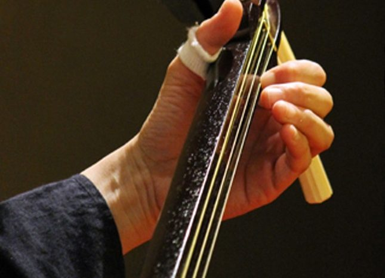
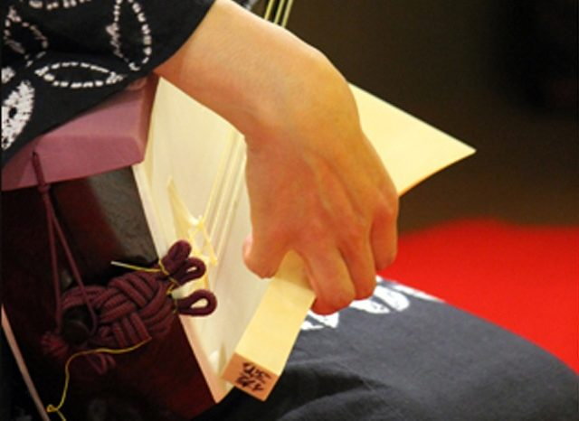

Meet your teacher
A nagauta shamisen master who plays and teaches in Kobe. Her background below is based on her school's website and checked with her.

Sajimaro Kineya
Thirty years of nagauta shamisen — welcoming you at her own studio in Kobe.
She began nagauta shamisen in 1996 under Kineya Satomiji (Kineya Sayasuke). In 2003 she received her professional name from the seventh head of the Kineya Sakichi school, and since 2011 she has been a certified master (shihan) of the Nagauta Samonkai. She runs her own nagauta and shamisen school, Nyaga-uta Juku, in central Kobe, and hosts the concert series “Aki Nagauta Neko no Kai” every autumn.
Her path
- 1996Begins training under Kineya Satomiji III (Kineya Sayasuke)
- 2003Receives her professional name from the 7th head of the Kineya Sakichi school
- 2006Studies under Kineya Sayasuke II
- 2007Joins the Nagauta Association
- 2011Becomes a master (shihan) of the Nagauta Samonkai
- TodayRuns Nyaga-uta Juku, her own nagauta and shamisen school, and hosts an autumn concert every year (12th in 2025)
She also writes her own pieces, including an animal series with titles like “Shoebill” and “Garden Eel”.


Her school's website ↗Instagram @sajimaro ↗
See her datesThe experience
Nagauta Shamisen: Play the Music of Kabuki
- Price
- ¥20,000 / person
- Time
- 60 min